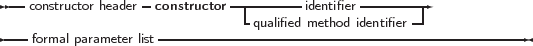
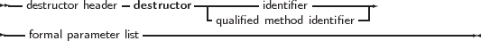

As can be seen in the syntax diagram for an object declaration, Free Pascal supports constructors and destructors. The programmer is responsible for calling the constructor and the destructor explicitly when using objects.
The declaration of a constructor or destructor is as follows:
_________________________________________________________________________________________________________
Constructors and destructors


___________________________________________________________________
A constructor/destructor pair is required if the object uses virtual methods. The reason is that for an object with virtual methods, some internal housekeeping must be done: this housekeeping is done by the constructor1.
In the declaration of the object type, a simple identifier should be used for the name of the constructor or destructor. When the constructor or destructor is implemented, a qualified method identifier should be used, i.e. an identifier of the form objectidentifier.methodidentifier.
Free Pascal supports also the extended syntax of the New and Dispose procedures. In case a dynamic variable of an object type must be allocated the constructor’s name can be specified in the call to New. The New is implemented as a function which returns a pointer to the instantiated object. Consider the following declarations:
Then the following 3 calls are equivalent:
and
and also
In the last case, the compiler will issue a warning that the extended syntax of new and dispose must be used to generate instances of an object. It is possible to ignore this warning, but it’s better programming practice to use the extended syntax to create instances of an object. Similarly, the Dispose procedure accepts the name of a destructor. The destructor will then be called, before removing the object from the heap.
In view of the compiler warning remark, the following chapter presents the Delphi approach to object-oriented programming, and may be considered a more natural way of object-oriented programming.
1A pointer to the VMT must be set up.